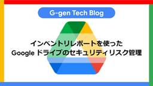
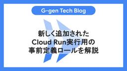
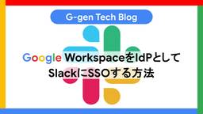
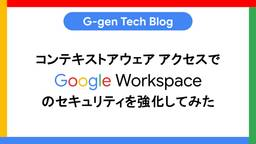

G-gen Tech Blog
https://blog.g-gen.co.jp/
Google Cloud(旧称GCP)の情報発信を行う技術ブログ
フィード

インベントリレポートを使ったGoogle ドライブのセキュリティリスク管理
G-gen Tech Blog
G-gen の三浦です。当記事では、Google ドライブのインベントリレポート機能を使ったセキュリティリスクの管理方法を紹介します。 概要 ドライブインベントリとは 前提条件 設定の概要 設定手順 [Google Cloud] BigQuery データセットの作成 [Google Workspace] インベントリレポートの有効化 [Google Cloud] レポートデータの確認 データ抽出例 サンプルクエリ①：アクセス権が「リンクを知っているインターネット上の誰もがアクセスできる」ファイルの抽出 サンプルクエリ②：特定のユーザーがオーナーとなっているファイルを抽出（マイドライブも含む） …
1日前

新しく追加されたCloud Run実行用の事前定義ロールを解説 1
1
G-gen Tech Blog
2024年12月17日より、Cloud Run を呼び出すための権限を持つ3つの事前定義ロールが新たに利用可能となりました。当記事ではロールの詳細や、従来から利用されてきた事前定義ロールとの違いなどを解説します。 はじめに 新たな事前定義ロール Cloud Run サービス起動元 Cloud Run ジョブ エグゼキュータ オーバーライドを使用する Cloud Run ジョブ エグゼキュータ Cloud Run 起動元ロールとの比較 権限内容の比較 Cloud Run jobs のキャンセル、オーバーライドに関して 参考リンク はじめに 2024年12月17日より、Cloud Run を呼び出…
2日前

Google WorkspaceをIdPとしてSlackにSSOする方法
G-gen Tech Blog
G-gen の三浦です。当記事では Google Workspace（Cloud Identity）を使用して、Slack にシングルサインオン（以下、SSO）を設定する方法を紹介します。 基礎知識 シングルサインオン（SSO）とは SAML 認証とは SAML 認証の流れ Google Workspace の SSO 対応するアプリ Google Workspace を IdP とするメリット 対応エディション 検証の概要 検証作業 [Google Workspace] カスタム SAML アプリの作成 [Google Workspace] カスタム SAML アプリのユーザー設定 [Sla…
3日前

コンテキストアウェアアクセスでGoogle Workspaceのセキュリティを強化してみた
G-gen Tech Blog
G-gen の三浦です。当記事では、コンテキストアウェア アクセス（CAA）を使って Google ドライブ等の Google Workspace アプリケーションへのアクセスを制御する方法を紹介します。 コンテキストアウェア アクセスとは 前提条件 検証内容 動作確認 モニターモードの設定 動作確認（モニターモード） アクセスレベル変更（アクティブモード） 動作確認（アクティブモード） 複合条件の設定 複合条件の動作確認（アクティブモード） コンテキストアウェア アクセスとは コンテキストアウェア アクセス（以降、CAA）は、IP アドレスやデバイスの状態などのコンテキスト（背景情報）に基づ…
5日前

Privileged Access Manager(PAM)をTerraformで管理する
G-gen Tech Blog
G-gen の武井です。当記事では Privileged Access Manager を Terraform で管理する方法について紹介します。 はじめに 概要 Privileged Access Manager (PAM) PAM に必要な権限 利用資格の管理 利用資格の利用 (申請、承認) 全体構成 連携方式 ソースコード Direct Workload Identity および GitHub Actions ワークフロー Terraform ディレクトリ構成 env 配下 (呼び出し側) modules 配下 (モジュール) デプロイ terraform plan terraform …
8日前
Google CloudとGitHub Actions(Terraform)を連携するDirect Workload Identityを作成するbashスクリプト
G-gen Tech Blog
G-gen の武井です。当記事では Google Cloud と GitHub Actions (Terraform) を連携する Direct Workload Identity を作成する bash スクリプトを紹介します。 はじめに 概要 以前の記事との違い 制限事項 前提条件 免責事項 ソースコード スクリプトの使い方 認証 変数設定 実行 リソースの確認 Workload Identity プール・プロバイダー サービスアカウント Workload Identity プールの IAM Policy 構成 ソースコード (Terraform) Terraform ディレクトリ構成 ワー…
10日前
GoogleドライブをデータソースとするVertex AI SearchアプリでPythonからの検索結果がゼロになる場合の対処法
G-gen Tech Blog
G-gen の堂原です。当記事では、Google ドライブをデータソースとする Vertex AI Search アプリに対して、Python から検索を行う際に検索結果が0件になってしまう場合の対処法について紹介します。 はじめに 検索が失敗するケース Google Cloud APIs のチャンネルが v1alpha 以外の場合 サービスアカウントを用いる場合 対処法 Python Client サンプルコード ポイント ライブラリのチャンネル指定 credentials Requests ライブラリを用いての直接アクセス サンプルコード ポイント はじめに 当記事では、Google Cl…
12日前
Cloud Run functionsからVPC Service Controls境界内へのアクセスを許可する方法
G-gen Tech Blog
G-gen の堂原です。本記事では Google Cloud（旧称 GCP）の Cloud Run functions（旧 Cloud Functions）から、VPC Service Controls 境界の中のリソースへアクセスさせる方法について紹介します。 はじめに 本記事の趣旨 VPC Service Controls Cloud Run functions ポイント アクセスの成否 VPC 経由でのリクエストが必要な理由 VPC のアクセス可能なサービス はじめに 本記事の趣旨 本記事では、Cloud Run functions から、VPC Service Controls で保護…
15日前
GitHub監査ログをWorkload Identity認証でBigQueryにエクスポートしてみた
G-gen Tech Blog
G-gen の三浦です。当記事では Workload Identity の仕組みを使うことで、サービスアカウントキーを使わずに GitHub Enterprise の監査ログを BigQuery にエクスポートする仕組みを構築したのでご紹介します。 GitHub Enterprise とは 概要 監査ログ Google Cloud への監査ログエクスポート アーキテクチャ 構成図 ディレクトリ構成 環境構築 Workload Identity とサービスアカウントの作成 BigQuery データセットの作成とサービスアカウントへの権限付与 GitHub Actions ワークフローの作成 ma…
17日前
2024年11月のイチオシGoogle Cloudアップデート
G-gen Tech Blog
G-gen の杉村です。2024年11月のイチオシ Google Cloud アップデートをまとめてご紹介します。記載は全て、記事公開当時のものですのでご留意ください。 はじめに Eventarc Advanced が登場（Preview） Vertex AI Search で streaming answer メソッド（GA with Allowlist） Dataplex で automatic discovery of Cloud Storage data が Preview データ分類ラベルが Gmail にも対応 Google Cloud 認定試験に新試験が誕生 Applicatio…
19日前
IAM Deny policies（拒否ポリシー）を使った予防的統制
G-gen Tech Blog
G-gen の武井です。当記事では IAM Deny policies（拒否ポリシー）を使った予防的統制について解説します。 はじめに 当記事について 予防的統制 拒否ポリシー 拒否ポリシーの使い所 拒否ポリシーと組織のポリシーの違い 検証の概要 目的 前提 環境 必要な IAM ロール 拒否ポリシーでサポートされる権限 環境構築 ソースコード 実行結果 動作確認 拒否ポリシー設定前 拒否ポリシー設定後 関連記事 はじめに 当記事について 当記事では、IAM Deny policies（以下、拒否ポリシー）で特定の操作を制限し、Google Cloud 環境に予防的統制を効かせる方法を解説しま…
23日前
[Action Required] Ensure read access on container images deployed to Cloud Run
G-gen Tech Blog
2024年11月25日、Google Cloud から管理者宛てに「[Action Required] Ensure read access on container images deployed to Cloud Run」というタイトルのメール通知がありました。当記事では、通知の内容とユーザー側で必要なアクション、影響範囲の確認方法などを解説します。 通知の内容 変更の適用前（2025年1月25日以前） 変更の適用後（2025年1月25日以降） ユーザー側で必要なアクション 想定される影響範囲 影響範囲の確認方法 通知メール Cloud Asset Inventory Cloud Logg…
25日前
生成AI評価ツール「Gen AI evaluation service in Vertex AI」を紹介
G-gen Tech Blog
G-gen の又吉です。当記事では、生成 AI の出力を迅速かつ効率的に評価できる Vertex AI 上の API である、Gen AI evaluation service を紹介します。 概要 ユースケース 評価指標について 評価タイプ 計算ベース モデルベース 料金 使ってみる 概要 準備 実行と結果 その他 クォータの制限について 評価データセットの件数 概要 Gen AI evaluation service は、生成 AI アプリケーションの出力を効率的に評価するための機能です。Vertex AI の1機能として、API で提供されます。この機能を使うと、事前定義された評価指標や…
1ヶ月前
「サービス アカウント キーの作成が無効になっています」への対処法
G-gen Tech Blog
G-gen の杉村です。Google Cloud（旧称 GCP）で、サービスアカウントから認証キーを作成しようとした際に サービス アカウント キーの作成が無効になっています 組織ポリシーの制約「iam.disableServiceAccountKeyCreation」が組織に適用されています。 と表示されてキーが作成できない場合の、対処法を紹介します。 事象とメッセージ 原因 対処する前に 対処方法 対処手順 IAM 権限の確認 組織、フォルダまたはプロジェクトを選択 組織のポリシー画面へ遷移 制約の編集画面へ遷移 制約を編集 結果の確認 事象とメッセージ Google Cloud（旧称 G…
1ヶ月前
組織のポリシーをタグで制御してみた
G-gen Tech Blog
G-gen の津守です。Google Cloud の組織ポリシー機能で、プロジェクトにタグを適用することで例外設定を行う方法を検証しました。 はじめに 当記事について 前提知識 検証 タグキーと値の作成 フォルダとプロジェクトの作成 ポリシーの適用 補足情報 条件の指定について Terraform はじめに 当記事について Google Cloud（旧称 GCP）では組織のポリシーを使って、組織内のプロジェクトに一律でセキュリティや統制強化のための設定を適用できます。このとき、特定のプロジェクトにのみ例外を設けたい場合もあります。 例えば、組織全体に「公開アクセスの防止を適用する（constr…
1ヶ月前
Pub/SubのCloud Storage import topicを使ってみた
G-gen Tech Blog
G-gen の杉村です。Pub/Sub の Cloud Storage インポートトピック（Cloud Storage import topic）を使うと、事前に指定した Cloud Storage バケットに Put されたテキストオブジェクトを、ノーコードで Pub/Sub トピックにパブリッシュし、簡単に Pub/Sub サブスクリプションに配信できます。 前提知識 Cloud Storage インポートトピックとは 設定値 検証の概要 環境構築 サービスエージェントへ IAM 権限の付与（パブリッシュ） バケットの作成 トピックの作成 サービスエージェントへ IAM 権限の付与（バケッ…
1ヶ月前
DNSエンドポイントを使用してGitHub ActionsからGKEクラスタにリソースをデプロイする
G-gen Tech Blog
G-gen の佐々木です。当記事では、GitHub Actions で GKE クラスタにリソースをデプロイする際に、DNS エンドポイントを使用する方法を解説します。 DNS エンドポイントとは GitHub Actions を使用した GKE へのデプロイ 従来の方法 DNS エンドポイントを使用する方法（当記事で解説） DNS エンドポイントを使用する GKE クラスタの作成 シェル変数の設定 ネットワークリソースの作成 GKE クラスタの作成 Direct Workload Identity の構成 シェル変数の設定 Workload Identity の設定 GitHub Actio…
1ヶ月前
DNSベースのエンドポイントを使用してGKEのコントロールプレーンに接続する
G-gen Tech Blog
G-gen の佐々木です。当記事では、GKE のコントロールプレーンにアクセスするための新しい方法として、DNS ベースのエンドポイント（DNS エンドポイント）を紹介します。 はじめに GKE におけるコントロールプレーンへのアクセス方法 従来の方法 パブリックエンドポイント プライベートエンドポイント DNS エンドポイント IP ベースと DNS ベースの比較 使用方法 DNS エンドポイントの有効化 コントロールプレーンへのアクセス IP アドレスを使用した接続の無効化 はじめに Google Cloud（旧称 GCP）のフルマネージドなコンテナオーケストレーションサービスである Go…
1ヶ月前
Associate Data Practitioner試験対策マニュアル
G-gen Tech Blog
G-genの杉村です。Google Cloud（旧称 GCP）の認定資格である Associate Data Practitioner 資格の試験対策に有用な情報を記載します。 基本的な情報 Associate Data Practitioner とは 難易度 出題傾向 試験対策 ETL と ELT ETL と ELT の基本 オープンソースツールとフルマネージドサービス Cloud Data Fusion イベントドリブンアーキテクチャ データベースの選択 BigQuery BigQuery の基本 ELT と ETL 半構造化データの扱い（JSON 型） パーティションとクラスタリング 外…
1ヶ月前
Cloud Load Balancingのアクセスログとクエリのサンプル
G-gen Tech Blog
G-gen の杉村です。2024年10月現在で利用可能な12種類の Cloud Load Balancing のアクセスログは、それぞれフォーマットが異なります。アクセスログをクエリするための Cloud Logging クエリと、アクセスログのサンプルを掲載します。 はじめに アクセスログのフィルタリング フィールドに入る値の違い 公式ドキュメントの記述 Cloud Logging 用クエリ アクセスログのサンプル Global external Application Load Balancer Classic Global external Application Load Balanc…
1ヶ月前
Access Context ManagerでGoogle CloudコンソールとAPIへのアクセスを制限する
G-gen Tech Blog
G-gen の武井です。当記事では、Access Context Manager を使い、Google Cloud コンソール と API へのアクセスを制限する方法について解説します。 はじめに 概要 実現できること アクセスレベル アーキテクチャ 概要 アクセス制限の対象ユーザー 組織外ユーザーに対するアクセス制限 実際にやってみた (デモ) 説明 Admin コンソールでの設定 Cloud コンソールでの設定 動作確認 シリアル番号の収集、登録 Google グループの作成 アクセスレベルの作成 Google グループとアクセスレベルの紐づけ Cloud コンソールへのアクセス #1 の…
1ヶ月前
Google CloudのIAMで最小権限の原則を実現する方法
G-gen Tech Blog
G-gen の杉村です。当記事では、Google Cloud の IAM（Identity and Access Management）で最小権限の原則を実現するための手段をご紹介します。 IAM と最小権限の原則 過剰な権限を予防する IAM の仕組みを正確に理解する IAM 権限を操作できる人を限定する 一時的な特権の管理 すでに付与された権限を整理する IAM Recommender Policy Analyzer Cloud Assets Inventory IAM と最小権限の原則 IAM（Identity and Access Management）は、Google Cloud の…
2ヶ月前
2024年10月のイチオシGoogle Cloudアップデート
G-gen Tech Blog
G-gen の杉村です。2024年10月のイチオシ Google Cloud アップデートをまとめてご紹介します。記載は全て、記事公開当時のものですのでご留意ください。 はじめに Gemini で Dynamic retrieval が GA BigQuery コンソールで Airflow の DAG が管理できるように Google Forms で新しい質問タイプ「Rating」が使えるように BigQuery の SQL で Pipe syntax（パイプ構文）が Preview 公開 Gemini Code Assist に Enterprise プランが登場 Looker から Loo…
2ヶ月前
Compute EngineインスタンスにPostgreSQLサーバを構築する
G-gen Tech Blog
G-gen の佐々木です。当記事では、Google Cloud の仮想マシンサービスである Compute Engine（Google Compute Engine: GCE）に PostgreSQL サーバを構築していきます。 当記事の目的 Compute Engine インスタンスの作成 作業の概要 シェル変数の設定 VPC・サブネットの作成 VPC の作成 サブネットの作成 インスタンスの作成 ファイアウォールルールの設定 インスタンスに SSH 接続 コンソールからインスタンスに接続（GUI の場合） gcloud コマンドで SSH 接続（CLI の場合） PostgreSQL のイ…
2ヶ月前
Secure Web ProxyでVMからのWebアクセスを制御してみた
G-gen Tech Blog
G-gen の三浦です。当記事では、Secure Web Proxy を使って、Virtual Private Cloud （以下、VPC）上の Compute Engine VM からインターネットへ接続する際の Web アクセス制御の方法を紹介します。 Secure Web Proxy とは 検証内容の概要 構成図 検証の流れ SWP の初期構築 プロキシ専用サブネットの作成 SSL/TLS 証明書の作成 SWP のポリシーの設定 SWP インスタンスの設定 Web アクセスと Windows Update のブロック確認 プロキシの設定 Web アクセスの確認 Cloud Logging…
2ヶ月前
Associate Google Workspace Administrator試験対策マニュアル
G-gen Tech Blog
G-genの杉村です。Google Cloud（旧称 GCP）の認定資格である Associate Google Workspace Administrator 資格の試験対策に有用な情報を記載します。 基本的な情報 Associate Google Workspace Administrator とは 難易度 出題傾向 試験対策 ユーザーアカウント ID 連携 アーカイブユーザーライセンス Google グループ Google グループと設定グループ 動的グループ 共同トレイ ビジネス向け Google グループ 組織部門（OU） Google Vault Google Vault とは リ…
2ヶ月前
Google CloudとGitHub Actions(Terraform)を連携するWorkload Identityを作成するbashスクリプト
G-gen Tech Blog
G-gen の武井です。当記事では Google Cloud と GitHub Actions (Terraform) を連携する Workload Identity を作成する bash スクリプトを紹介します。 はじめに 概要 前提条件 免責事項 ソースコード スクリプトの使い方 認証 変数設定 実行 リソースの確認 Workload Identity プール・プロバイダー サービスアカウント IAM Policy デモ 構成 ソースコード (Terraform) Terraform ディレクトリ構成 ワークフロー (terraform.yaml) env/demo 配下 (呼び出し側) …
2ヶ月前
FinOpsハブでGoogle Cloudのコストを最適化する
G-gen Tech Blog
G-gen の武井です。当記事では、Cloud Billing の機能の一つである FinOps ハブ を使い、Google Cloud のコストを最適化する方法を解説します。 FinOps ハブとは FinOps ハブのダッシュボード 表示方法 画面説明 Recommender による推奨事項 必要な権限 料金 実際に試してみた 推奨事項の確認 詳細の確認 リソースの削除 ダッシュボードへの反映 関連記事 FinOps ハブとは FinOps ハブとは、Cloud Billing と Recommender（AI による推奨事項を管理する仕組み）によって収集された過去の使用状況に基づき、クラ…
2ヶ月前
複数プロジェクトのCloud SQLインスタンスをリストするbashスクリプト
G-gen Tech Blog
G-gen の杉村です。複数の Google Cloud プロジェクトの Cloud SQL インスタンスの情報一覧を取得する bash スクリプトを紹介します。 はじめに 概要 前提条件 免責事項 ソースコード 出力例 実行方法 入力ファイルの準備 スクリプトの実行 応用 はじめに 概要 当記事で紹介するのは、複数の Google Cloud プロジェクトに存在する Cloud SQL インスタンスの一覧を CSV ファイルに出力するためのスクリプトです。 当スクリプトを使うことで、Google Cloud 組織配下の全ての Cloud SQL インスタンスを一覧にすることができます。組織内…
2ヶ月前
Cloud Runのマルチリージョンサービスを解説
G-gen Tech Blog
G-gen の佐々木です。当記事では Cloud Run のマルチリージョンサービスについて解説します。 マルチリージョンサービスとは メリット サービスのレイテンシ低下 リージョン障害への耐性 各リージョンへの一括デプロイ 注意点 利用料金 構成は全リージョン一律 利用手順 マルチリージョンサービスの作成 マルチリージョンサービスの更新 ロードバランサのバックエンドにマルチリージョンサービスを設定 マルチリージョンサービスとは マルチリージョンサービスとは、一度の操作で複数リージョンに Cloud Run サービスをデプロイすることができる機能です。 Cloud Run は通常、サービスのデ…
2ヶ月前